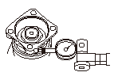
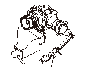
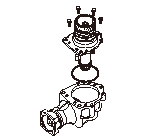
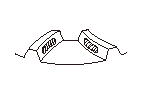

トランスファの点検
コンパニオン フランジ（A）にダイヤル ゲージ（B）をセットして、トランスファ ギヤのバックラッシュを測定する。
標準値:
0.06－0.16mm

トランスファ総合起動トルクを測定するために、トランスファ ケース（A）をバイスで固定する。
トランスファ ケースをバイスに固定する際、ケースを傷つけないよう木片などで保護すること。
コンパニオン フランジを数回回転させてベアリングをなじませる。
トルク レンチ（B）とソケット（C）を使用して、コンパニオン フランジ側での起動トルクを測定する。
標準値:
1.96－3.14N･m（20.0－32.0kgf･cm）
トランスファをバイスから外す。

トランスファ（A）からトランスファ ホルダ（B）、ノック ピン（C）を取外し、トランスファ ホルダからOリング（D）を取外す。
トランスファ ドライブ ギヤの歯面両面に青ニスを薄く均一に塗布する。
トランスファ ホルダをトランスファに取付け、ボルトを締付ける。
コンパニオン フランジを1回転させ、さらに1回逆回転させる。

トランスファ ホルダを取外して、トランスファ ギヤの歯当たりの状態を点検する。
バックラッシュの測定値、起動トルクの測定値、歯当たりの状態のいずれかひとつでも適正でない項目がある場合は、トランスファを分解して調整を行う。

 トランスファ ケースをバイスに固定する際、ケースを傷つけないよう木片などで保護すること。
トランスファ ケースをバイスに固定する際、ケースを傷つけないよう木片などで保護すること。